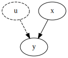
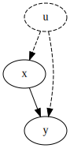

Regression¶
We begin with the regression model
where \(\beta_0\) is the intercept of the regression line, \(\beta_1\) is the slope parameter corresponding to the variable \(x\), and \(u\) is unobserved information.
We need to assume that \(E(u|x)=0\), which tells us that \(E(y|x) = \beta_0 + \beta_1 x\). This assumption is called exgoeneity.
When we want to impose this assumption, what we really mean is that we want to assume

This is a strong assumption, we will often encounter models that more realistically look like

where we have edges \(x \rightarrow y, u \rightarrow x, u \rightarrow y\). In this case, we cannot estimate a causal effect of \(x\) on \(y\) with a simple linear regression because \(x\) is endogenous.
Should our exogeneity assumption hold, we can confidently proceed with Ordinary Least Squares (OLS) regression.
With one \(x\) variable, the estimators for \(\hat{\beta}_0\) and \(\hat{\beta}_1\) are:
One of the best ways to practice with regression is to simulate the data ourselves. This guarantees that we know the true causal model as well as parameters.
Begin by importing the numpy and pandas modules.
import numpy as np
import pandas as pd
We’ll start by generating observations one unit at a time. This is perhaps the most straight-forward way of visualizing the data (though the least efficient!).
np.random.seed(0)
u = []
x = []
y = []
for i in range(1000):
u.append( np.random.normal(0,1) )
x.append( np.random.normal(0,1) )
y.append( 1 + 2*x[i] + u[i] ) # beta_0 is 1, beta_1 is 2
Print out a snippet of data, just to verify what we have.
print(x[0:10])
print(y[0:10])
[0.4001572083672233, 2.240893199201458, -0.977277879876411, -0.1513572082976979, 0.41059850193837233, 1.454273506962975, 0.12167501649282841, 0.33367432737426683, -0.20515826376580087, -0.8540957393017248]
[3.564366762702111, 6.4605243825086545, 0.9130022303971455, 1.6473740009301936, 1.7179781520831867, 4.052590585086828, 2.0043877581326504, 2.111211887493959, 2.0837625456260045, -0.3951237769525482]
The regression formula requires \(\bar{x}\) and \(\bar{y}\), which are the means of \(x\) and \(y\), respectively. We can use two built-in methods to do this for the sake of review. We’ll utilize the slightly more efficient np.mean() function in later example.
xmean = sum(x)/len(x)
ymean = sum(y)/len(x)
print(xmean, ymean)
-0.00990328278886823 0.9584569500370996
Now, let’s compute \(\frac{\sum_{i=1}^n(x_i - \bar{x})(y_i - \bar{y})}{\sum_{i=1}^n(x_i-\bar{x})^2}\) one unit at a time.
numerator = 0
denominator = 0
for i in range(1000):
numerator += (x[i] - xmean) * (y[i] - ymean)
denominator += (x[i] - xmean)**2
beta1 = numerator / denominator
Once we have \(\hat{\beta}_1\), the estimation of \(\hat{\beta}_0\) is easy.
beta0 = ymean - beta1*xmean
print(beta0, beta1)
0.9781266416743201 1.9861789324374455
Let’s now repeat the analysis, but this time utilizing DataFrames to store the data a bit more compactly.
np.random.seed(0)
df = pd.DataFrame(columns=['x','y']) # creates an empty DataFrame (a DataFrame with no rows) that has column names 'x' and 'y'
df['u'] = np.random.normal(0, 1, 1000)
df['x'] = np.random.normal(0, 1, 1000)
df['y'] = 1 + 2 * df['x'] + df['u'] # beta_0 is 1, beta_1 is 2
Rather than use for loops to calculate the numerator/denominator values as above, we can use the sum() function to simplify the math.
df_numerator = sum( (df['x'] - np.mean(df['x'])) * (df['y'] - np.mean(df['y'])) )
df_denominator = sum( (df['x'] - np.mean(df['x']))**2 )
df_beta1 = df_numerator/df_denominator
df_beta0 = np.mean(df['y']) - df_beta1*np.mean(df['x'])
print(df_beta0, df_beta1)
0.9551807025777593 1.9678775071492143
In both simulations, the values for \(\hat{\beta}_0\) and \(\hat{\beta}_1\) are close to their correct values.
What happens if we break the exogeneity assumption and allow for \(u \rightarrow x\)? Let’s simulate some data to find out.
np.random.seed(0)
df2 = pd.DataFrame(columns=['x','y','u'])
df2['u'] = np.random.normal(0, 1, 1000)
df2['x'] = np.random.normal(0, 1, 1000) + df2['u']
df2['y'] = 1 + 2 * df2['x'] + df2['u']
df2['xdiff'] = df2['x'] - np.mean(df2['x'])
df2['ydiff'] = df2['y'] - np.mean(df2['y'])
df2_numerator = sum(df2['xdiff'] * df2['ydiff'])
df2_denominator = sum(df2['xdiff'] * df2['xdiff'])
df2_beta1 = df2_numerator/df2_denominator
df2_beta0 = np.mean(df2['y']) - df2_beta1*np.mean(df2['x'])
print(df2_beta0, df2_beta1)
0.9708784946790944 2.5099658945193766
Here, there was a positive effect \(u \xrightarrow{\text{positive}} x\) and the estimate of \(\hat{\beta}_1\) is too high.
What happens if we have \(u \xrightarrow{\text{negative}} x\)?
np.random.seed(0)
df3 = pd.DataFrame(columns=['x','y','u'])
df3['u'] = np.random.normal(0, 1, 1000)
df3['x'] = np.random.normal(0, 1, 1000) - df2['u']
df3['y'] = 1 + 2 * df3['x'] + df3['u']
df3['xdiff'] = df3['x'] - np.mean(df3['x'])
df3['ydiff'] = df3['y'] - np.mean(df3['y'])
df3_numerator = sum(df3['xdiff'] * df3['ydiff'])
df3_denominator = sum(df3['xdiff'] * df3['xdiff'])
df3_beta1 = df3_numerator/df3_denominator
df3_beta0 = np.mean(df3['y']) - df3_beta1*np.mean(df3['x'])
print(df3_beta0, df3_beta1)
0.9847310072318374 1.4906428285085511
In this case, the estimate of \(\hat{\beta}_1\) is too low.
When your model has one variable, the estimation error from endogeneity is predictable: a positive effect of \(u\) on \(x\) will render a \(\hat{\beta}_1\) that is too large while a negative effect of \(u\) on \(x\) will render a \(\hat{\beta}_1\) that is too small. The “incorrectness” of \(\hat{\beta}_1\) is referred to as estimation bias.
Concept check: putting it all together to test the above claim about estimation bias under endogeneity. On the first line of code, set the seed to \(0\). Then create a function called get_bias(), which takes no inputs. Inside the function, create a DataFrame to store values for \(u\), \(e\), \(x\) and \(y\) where:
there are \(1000\) observations
\(u \sim N(0,1)\)
\(e \sim N(0,1)\)
\(x = u + e\) (\(x\) has a random component, \(e\), as well as a component that is caused by \(u\))
\(y = 1 + 2*x + u\) Perform linear regression to estimate \(\hat{\beta}_1\). Return the value \(\hat{\beta}_1 - 2\) (this is the estimation error).
Outside the function, use either a for loop or list comprehension to execute the function get_bias() \(100\) times, saving the returned value to a list each time. Name this list bias. Finally, print the minimum, mean, and maximum values of the list bias.
This task may seem like a lot of work, but it’s honeslty just the combination of a few little tasks that we’ve done multiple times by now!
np.random.seed(0)
def get_bias():
df = pd.DataFrame(columns=['u','e','x','y'])
df['u'] = np.random.normal(0, 1, 1000)
df['e'] = np.random.normal(0, 1, 1000)
df['x'] = df['u'] + df['e']
df['y'] = 1 + 2*df['x'] + df['u']
beta_1 = sum( (df['x'] - np.mean(df['x'])) * (df['y'] - np.mean(df['y'])) ) / sum( (df['x'] - np.mean(df['x']))**2 )
return beta_1 - 2
bias = [get_bias() for i in range(100)]
print(min(bias), np.mean(bias), max(bias))
0.4595900036063352 0.4993952043129066 0.5305625067816879